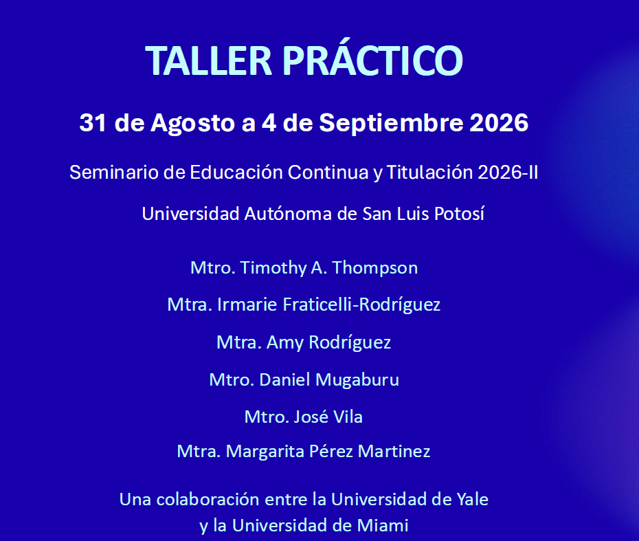

From August 31 to September 4, 2026, I served as an instructor in a hands-on workshop for students at Universidad Autónoma de San Luis Potosí (UASLP), Mexico, as part of its Seminario de Educación Continua y Titulación 2026-II (Continuing Education and Degree Completion Seminar).

The workshop was developed through a collaboration between Yale University and University of Miami, with the participation of Timothy A. Thompson, Irmarie Fraticelli-Rodríguez, Amy Rodríguez, Daniel Mugaburu, Margarita Pérez Martinez, and myself. Throughout the sessions, we worked with students on concepts and tools related to Linked Data and BIBFRAME, combining an introduction to these models with hands-on exercises and practical activities.

One of the most rewarding aspects of this experience was the opportunity to contribute to BIBFRAME and Linked Data education in Latin America. The transition to new models of bibliographic description is not simply a technological shift. It also requires opportunities for training, experimentation, and knowledge exchange that help current and future information professionals become familiar with these technologies.
The workshop also provided an excellent opportunity to collaborate with colleagues from Yale University and University of Miami and to exchange different perspectives on teaching Linked Data and applying it in libraries.
← Back to Professional Activity